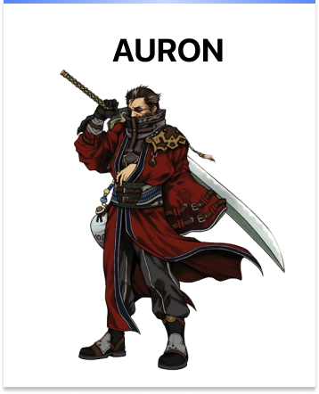

Personagens



De acordo com uma pesquisa recente (via Siliconera), Final Fantasy X, lançado originalmente em 2001 para PS2, é o favorito dos jogadores do Japão. Final Fantasy VII (1997) está logo em seguida na lista, enquanto Final Fantasy VI (1994) ocupa o terceiro lugar.
Tidus é um jogador de blitzball de uma brilhante metrópole conhecida
como Zanarkand. Durante a Copa Memorial em honra a Jecht, pai de Tidus
e lendário jogador de blitzball que desapareceu há dez anos atrás,
o estádio é destruído por um monstro colossal que ataca a cidade.
Tidus é varrido pelo monstro juntamente com Auron, um homem que esteve
cuidando dele desde que Jecht desapareceu e sua mãe morreu, deixando-o órfão.
Tidus acorda em um mundo desconhecido chamado Spira, onde encontra pessoas cuja língua
ele não entende e uma ilha habitada por pessoas com costumes aos quais ele não está familiarizado.
A única coisa que ele reconhece é o blitzball e, após testemunharem suas habilidades,
os habitantes desejam adicioná-lo ao time local.
Agora sob os cuidados de seus novos amigos,
Tidus conhece a invocadora Yuna, que está partindo para uma peregrinação para derrotar Sin,
o monstro que atacou Zanarkand e aparentemente transportou Tidus para o futuro, já que o
único conhecimento que os habitantes de Spira têm sobre Zanarkand é que foi uma terra
sagrada destruída pelo Sin há mil anos atrás.